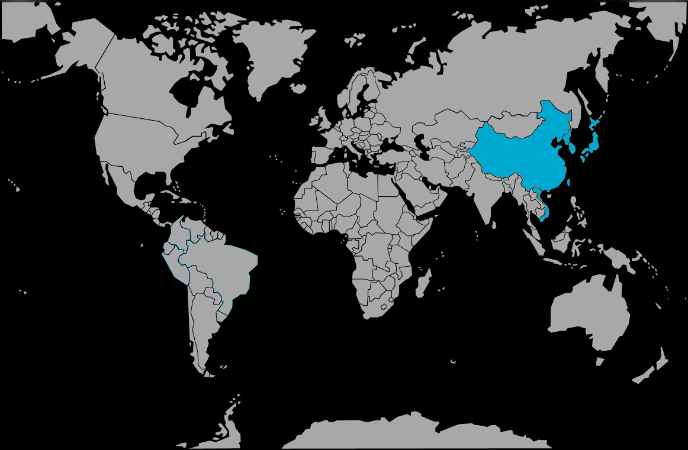

Systématique
- Ordre : Anabantiformes
- Famille : Osphronemidae
- Genre : Macropodus
- Espèce : Macropodus opercularis
Macropodus opercularis, le poisson‑paradis, est l’un des premiers poissons tropicaux maintenus en aquarium, originaire d’Asie de l’Est et du Sud‑Est où il peuple rizières, fossés, mares et petits cours d’eau.
Les adultes atteignent environ 8–10 cm, avec un corps allongé orné de bandes verticales bleutées et rougeâtres, et de longues nageoires plus développées et colorées chez le mâle.
Espèce robuste mais au caractère bien affirmé, Macropodus opercularis est territorial, en particulier les mâles entre eux ; il se maintient de préférence en couple ou en harem dans un bac bien structuré.
Il occupe surtout la zone médiane et supérieure, aime les aquariums densément plantés avec de nombreuses cachettes et supporte sans difficulté des eaux pauvres en oxygène et des variations de température modérées.
Mode : constructeur de nid de bulles ; le mâle érige un nid en surface, souvent sous une feuille ou parmi les plantes flottantes, puis enlace la femelle sous le nid lors de la ponte.
Les œufs sont récupérés et placés dans le nid par le mâle, qui assure ensuite la garde et la ventilation jusqu’à l’éclosion et à la nage libre ; la femelle doit parfois être retirée si le mâle se montre trop agressif hors période de frai.
Dimorphisme sexuel : mâle plus grand, beaucoup plus coloré, avec nageoires dorsale, anale et caudale très allongées et effilées ; femelle plus petite, couleurs plus ternes, nageoires plus courtes.
Espérance de vie : autour de 5 à 8 ans en aquarium, parfois davantage avec une bonne maintenance.
Dans la nature, on le trouve dans des eaux calmes ou faiblement courantes de plaine : rizières, fossés d’irrigation, marais, mares et bras morts, souvent peu profonds, chauds, riches en végétation et parfois très pauvres en oxygène dissous.
Répartition
Origine naturelle :
- Asie : sud de la Chine (du Yangzi Jiang à la rivière des Perles), Taïwan, Hainan, nord et centre du Vietnam, nord‑est du Laos.
- Introduit dans de nombreux pays (Europe, Amériques, îles) où il peut se maintenir en milieux calmes et tempérés.
Son adaptabilité lui permet de supporter des eaux fraîches en hiver et plus chaudes en été, ce qui explique son succès en bassin extérieur dans les climats tempérés doux.
Paramètres de maintenance
Température : 18 à 26 °C, avec tolérance plus large environ 16 à 28 °C ; une légère variation saisonnière est bien acceptée.
pH : 6,0 à 8,0, eau légèrement acide à alcaline.
GH : 4 à 20 °dGH, eau douce à moyennement dure.
Courant : lent à quasi nul, avec une bonne végétation, des racines, des pierres et des plantes flottantes pour l’ombre et la construction du nid.
Volume conseillé : à partir de 80–100 L pour un couple, plus pour un harem ou une cohabitation avec d’autres espèces.
Régime alimentaire
Régime : carnivore opportuniste ; se nourrit majoritairement de larves d’insectes, vers, petits crustacés et autres invertébrés aquatiques.
En aquarium, il accepte sans difficulté proies vivantes et congelées (artémias, daphnies, vers de vase, larves de moustique) ainsi que paillettes et granulés de qualité ; une base protéinée variée renforce la coloration et la vitalité.